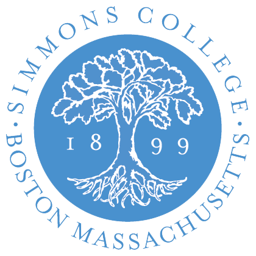
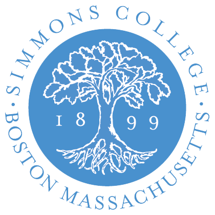

Project Blog
Our team will maintain weekly blogs to share our progress. Additionally, each of us will contribute personal blogs to share individual accomplishments pertinent to our research.
Karina's Blog | Emily's Blog | Sara's Blog
Table of Contents
Week 1: 9/4/16
During our first week, we set-up weekly meeting times for (1) just the student researchers and (2) the student researchers and our advisor, Dr. Veilleux.
We discussed an overview of the Intonation and Evidence project, including individual roles for the duration of the research and for the upcoming week. To keep track of our work and share personal progress with our team members, we decided to create a Basecamp account, where we schedule our meetings, set reminders to write our updates, and track weekly tasks.
Week 2: 9/11/16
This week, we reviewed our progress in learning ToBI together, having reached Lesson 2.3 in the lecture series created by Dr. Veilleux and her collaborators. We also began recording various phoneme sounds in Praat, including stop consonants and sonorants, and examined how the waveforms differ between each class of sound. With Dr. Veilleux, we learned how to slow down audio tracks in Praat to more easily notate files with ToBI pitch accents.
Week 3: 9/18/16
Throughout this week we continued working on the ToBI tutorial. While working through the lectures in ToBi we are continuing to add tones and boundary tones to our inventory. In one of our group meetings we worked together in listening to various sound files and labeling them by both ear and by looking at the sound waves in PRATT.
We are going to continue working on the ToBI tutorial as well as practicing labelling. This week we are going to continue moving forward with practicing labelling by using a sound file that contains an FM news radio cast.
Week 4: 9/25/16
In our student meeting, we practiced labeling exercises from the ToBI tutorial. We talked about concepts and "solutions" to exercises that confused us, and we addressed those confusions during our team meeting with our advisor.
Week 5: 10/2/16
This week, we received our individual assignments from Dr. Veilleux. Karina will begin writing a Python script that will analyze a dataset of ToBI labels, comparing text grids from different labellers to look for consistency and hone in on any discrepancies. Emily's assignment is to conduct additional research on prosody, with a focus on papers by semanticians Gunlogson and Northrup, and Sara will be studying new conventions of labelling in ToBI.
Week 6: 10/9/16
During Week 6 all three team members continued to work more on our individualized tasks. Throughout the past weeks we focused on learning the Tobi tutorial in order to understand the major conventions of labeling speech. After both individual work on labeling as well as team meetings discussing these labels, we all have a greater understanding of the conventions. Karina’s task for this week was to begin working on a script for organizing labels. Emily’s task this week was going through the literature prosody Sara’s task consisted of going into more detail regarding the conventions of labeling. This is what we have been working on individually throughout the past two weeks. As we approach week 7 we will be reconvening as a group and discussing our individual tasks.
Week 7: 10/16/16
Since we worked on our own things this week, we just summarized our results and asked questions about our specific tasks to Nanette. We will continue working on our own next week.
Week 8: 10/23/16
During this week as a group we met to discuss how our individual tasks were going and to discuss future project plans. Karina's script that was made to comapre labels is very helpful and very beneficial in the continuation of leanring these new labels. Looking forward regarding our future plans we are going to begin working out the details for running an experiment with new subjects. In order to do this we need to begin working on an IRB as well as working out the logistics and details of how the experiment will be run. As a team we will begin these tasks as well as continuing our individual tasks.
Week 9: 10/30/16
This week we began to establish the design of our experiment, as well as constructing our IRB proposal for Simmons College. Additionally, all three of us continued to practice using ToBI labels.
Week 10: 11/6/16
Emily and Sara finished up the IRB proposal, and Karina continued to work on Festival.
Week 11: 11/13/16
This week we submitted the IRB and we are waiting for approval. Moving forward we are going to finish the remaining details of the experiment.
Week 12: 11/20/16
This was the week of Thanksgiving Break, so we did not meet as a team.
Week 13: 11/27/16
Karina gave her update on Festival, and we decided if there is too much overhead to use it, we may go back to using Praat to tinker with recorded speech. We also honed Emily's randomizer to be a bit more specific to use during our experiments. We expect the IRB to clear us for testing soon.
This week we also set meeting times for next semester and scheduled tentative experiment times for after winter break.
Week 14: 12/4/16
Sara
Week 15: 12/11/16
This week was finals week, so we did not meet and instead focused on exams.
Week 16: 12/18/16
This week marked the start of winter break, so we won't be able to meet again in person until January.
Week 17: 12/25/16
Merry Christmas and Happy Hanukkah!
Week 18: 1/1/17
Happy New Year!
Week 19: 1/8/17
This was our last week of winter break. We're excited to get back to work on our project!
Week 20: 1/15/17
This week we solidified our plans for our production experiment. We did a test run and worked out kinks before getting started on the real thing next week.
Week 21: 1/22/17
This was our first week of official data collection and the process went well. During each time slot we always had two group members there to ensure that the process ran smoothly. After listening through the recordings it seemed that the usability lab was a quiet and conducive space for the experiment. The equipment worked well and the system that we use as a group for data collection seems to be working well. We had a total of eight participants and it seemed that the directions were clear and understood well. As a group we are looking forward to continuing to recruit more participants to allow for a larger subject pool.
Week 22: 1/29/17
We continued running subjects this week, which went well. We have a good pool of data to analyze next week.
Week 23: 2/5/17
And now the sound editing begins! We'll be chopping up our Praat files from our experiment into separate sound files, so that corresponding comic strip readings can be compared across participants. We've also begun preparing to recruit for another round of experiments later this semester by working with psychology department here at Simmons, which has a great online platform for student- and faculty-led studies.
Back to the top
 
